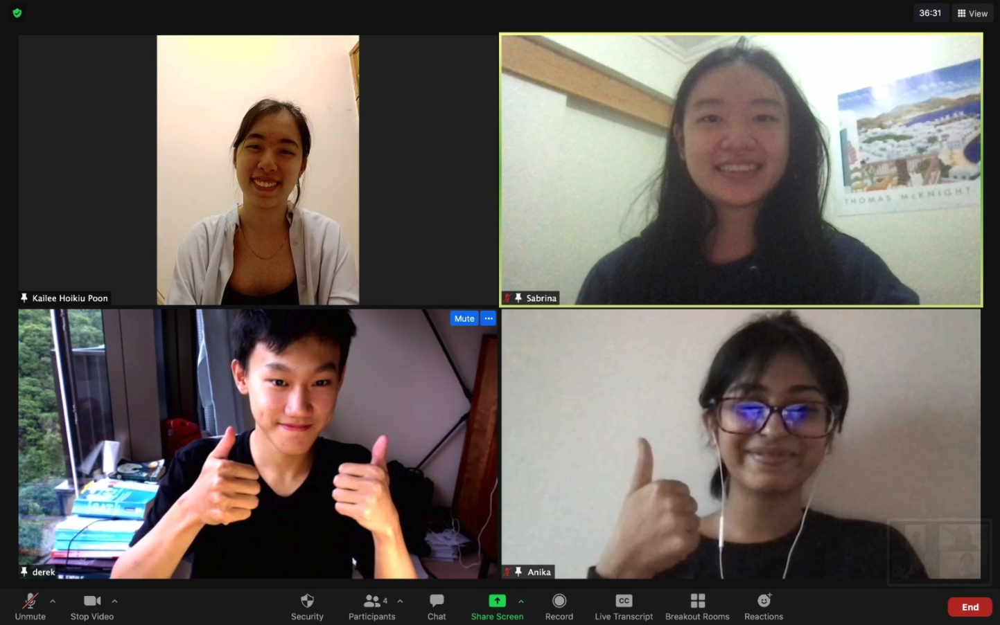

Collaborative events have proven to be invaluable for this project. The ASIJ team graciously invited us to the Southeast Asia iGEM team networking event where we met diverse groups who all have a passion for solving a prevalent issue in their communities. We were also invited to a regional symposium hosted by HKUST who provided us with beneficial feedback on our human practices and wet lab dry lab project portions. Considering all our team members are new to iGEM, both collaborations accepted us with amity and helped us graciously. As of now, both of these relationships are steadfast and we are grateful for all the feedback provided to our project.
However, the team relationship most valuable to us is our mentor-mentee relationship with team HKU. In our first meeting with them, they offered us feedback in our emerging patents section and human practices section, constructively critiquing aspects that were well designed or lacking. During this meeting, we established a mentorship program, with HKU formally becoming our mentor team. Throughout many visits and zoom meetings, they have provided us with essential feedback in many sections that would not be as successful as we see today. From their insights into project criteria, content, lab work, and human practices, we have consulted them on numerous occasions and they have been only helpful.
Throughout our project, we have had great communication with the HKU team. Through our communication, we gained a lot of insight and received helpful feedback on medal criteria and wet lab experiments.
One such instance was after we reached a roadblock in our human practices section. We consulted the HKU team for their experience and opinion on our content sections and received valuable feedback. Specifically, we learned more about the nature of patents and patent research in iGEM projects, the open-source nature of iGEM work, and the infeasibility in patenting project work. From this knowledge, we abandoned the deeper scale work we were planning to do for acquiring a patent and instead opted to add a thinner patent section investigating the feasibility of our project’s concept for patenting as a demonstration of possibility and uniqueness. This allowed us to create a more well-developed and logical human practices section without pursuing a patent which would have been both infeasible and time-consuming.
Beyond this, the HKU team has provided us with much support in wet lab areas. Kenneth Ng, in particular, has helped us with our project tremendously. He has played a crucial role as our guide and primary support. With his help, we have learned a lot about the scientific process behind building up a coherent experimental process. We owe our practical successes to his advice and insight.
Lastly, the HKU team helped us construct a more conclusive proof of concept section as well. When we reached a roadblock on our proof of concept section and overlapping content, they gladly walked us through sorting out what belongs. They gladly offered their insight into other criteria, which allowed us to distinguish and craft the proof of concept page we have today.
Our team tried our best to advertise their events and provide high school student resources, including participants for their events. When we were asked to find students to participate in their policy competition event, we worked hard to ensure that it was properly advertised and broadcasted to all students, especially those with overlapping STEM interests that would be especially interested in such an opportunity.
We also tried our best to let HKU know of any special presentational events we were being invited to participate in, in case these events were of interest to them. Overall, we tried to be an intermediate for them to expand their network of contacts in areas where applicable.
“When Should You Consider a Merger or Partnership? - N-Able.” N, 2 June 2021, www.n-able.com/blog/when-should-you-consider-merger-or-partnership.